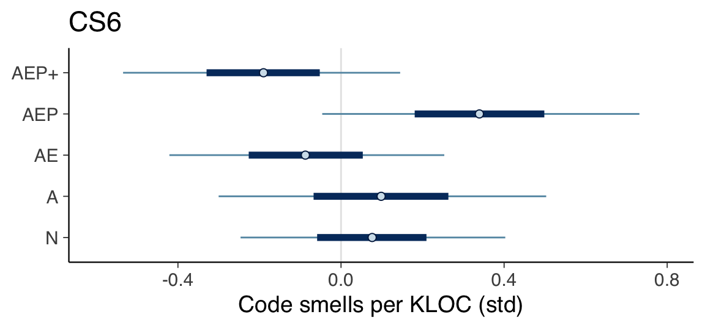
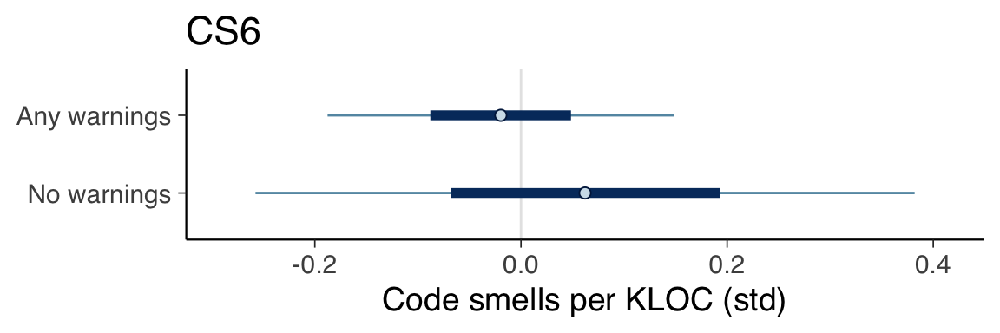
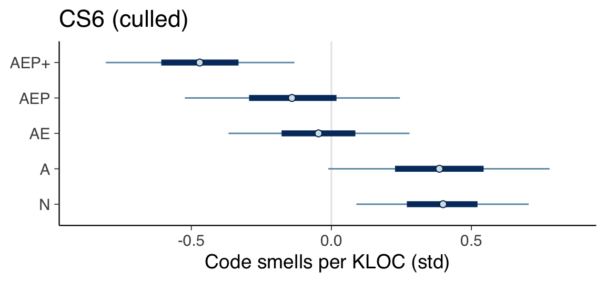
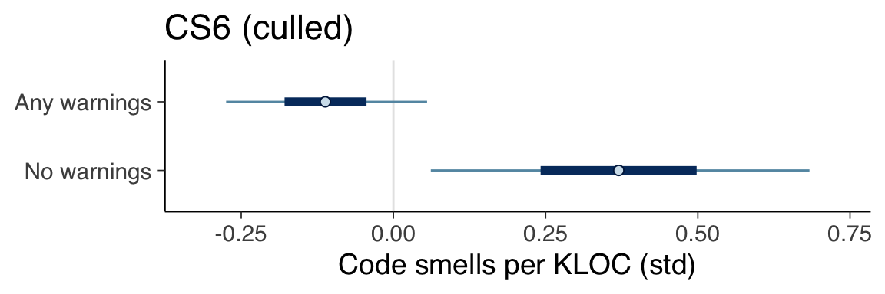

Chapter 6 Code Smells
This section covers the analysis relating to the “code smells” metric.
6.1 Prepare data
# The model seed is the date that the analysis was conducted
model_seed <- 20230302
# Returns a list of standardized data necessary for the analysis.
create_code_smells_data <- function(data) {
list(
code_smells_kloc_std=scale(data$code_smells_kloc),
contributors_std=scale(data$contributors),
stars_std=scale(data$stars),
age_std=scale(get_age(data$created_at))
)
}
# Prepare data with all categories as factors (1-11).
data <- create_code_smells_data(df)
data$category <- factor(df$category)
# Prepare data that factors on the presence of compiler warnings
data_factor_uses_warnings <- create_code_smells_data(df)
data_factor_uses_warnings$category <- factor(uses_warnings(df$category))6.2 Define models
6.2.1 CS1
fit_model_cs1 <- function(name, data) {
fit_model(name,
"code_smells_kloc_std ~ 0 + category",
c(
prior(normal(0, 1), class=b),
prior(exponential(1), class=sigma)
),
data,
model_seed)
}
cs1 <- fit_model_cs1("cs1", data)6.2.2 CS2
fit_model_cs2 <- function(name, data) {
fit_model(name,
"code_smells_kloc_std ~ 0 + category + contributors_std",
c(
prior(normal(0, 1), class=b),
prior(normal(0, 1), class=b, coef="contributors_std"),
prior(exponential(1), class=sigma)
),
data,
model_seed)
}
cs2 <- fit_model_cs2("cs2", data)6.2.3 CS3
fit_model_cs3 <- function(name, data) {
fit_model(name,
"code_smells_kloc_std ~ 0 + category + stars_std",
c(
prior(normal(0, 1), class=b),
prior(normal(0, 1), class=b, coef="stars_std"),
prior(exponential(1), class=sigma)
),
data,
model_seed)
}
cs3 <- fit_model_cs3("cs3", data)6.2.4 CS4
fit_model_cs4 <- function(name, data) {
fit_model(name,
"code_smells_kloc_std ~ 0 + category + age_std",
c(
prior(normal(0, 1), class=b),
prior(normal(0, 1), class=b, coef="age_std"),
prior(exponential(1), class=sigma)
),
data,
model_seed)
}
cs4 <- fit_model_cs4("cs4", data)6.2.5 CS5
fit_model_cs5 <- function(name, data) {
fit_model(name,
"code_smells_kloc_std ~ 0 + category + contributors_std + stars_std",
c(
prior(normal(0, 1), class=b),
prior(normal(0, 1), class=b, coef="contributors_std"),
prior(normal(0, 1), class=b, coef="stars_std"),
prior(exponential(1), class=sigma)
),
data,
model_seed)
}
cs5 <- fit_model_cs5("cs5", data)6.2.6 CS6
fit_model_cs6 <- function(name, data) {
fit_model(name,
"code_smells_kloc_std ~ 0 + category + contributors_std + age_std",
c(
prior(normal(0, 1), class=b),
prior(normal(0, 1), class=b, coef="contributors_std"),
prior(normal(0, 1), class=b, coef="age_std"),
prior(exponential(1), class=sigma)
),
data,
model_seed)
}
cs6 <- fit_model_cs6("cs6", data)6.2.7 CS7
fit_model_cs7 <- function(name, data) {
fit_model(name,
"code_smells_kloc_std ~ 0 + category + contributors_std + stars_std + age_std",
c(
prior(normal(0, 1), class=b),
prior(normal(0, 1), class=b, coef="contributors_std"),
prior(normal(0, 1), class=b, coef="stars_std"),
prior(normal(0, 1), class=b, coef="age_std"),
prior(exponential(1), class=sigma)
),
data,
model_seed)
}
cs7 <- fit_model_cs7("cs7", data)6.3 Compare models
cs1 <- add_criterion(cs1, criterion="loo", moment_match=TRUE)
cs2 <- add_criterion(cs2, criterion="loo", moment_match=TRUE)
cs3 <- add_criterion(cs3, criterion="loo", moment_match=TRUE)
cs4 <- add_criterion(cs4, criterion="loo", moment_match=TRUE)
cs5 <- add_criterion(cs5, criterion="loo", moment_match=TRUE)
cs6 <- add_criterion(cs6, criterion="loo", moment_match=TRUE)
cs7 <- add_criterion(cs7, criterion="loo", moment_match=TRUE)
print(loo_compare(cs1, cs2, cs3, cs4, cs5, cs6, cs7, criterion="loo"),
simplify=FALSE)## elpd_diff se_diff elpd_loo se_elpd_loo p_loo se_p_loo looic se_looic
## cs6 0.0 0.0 -197.1 47.9 25.6 21.1 394.2 95.8
## cs3 -0.6 1.2 -197.8 48.8 25.5 21.5 395.5 97.7
## cs5 -0.7 0.6 -197.8 48.5 26.4 22.0 395.7 96.9
## cs4 -1.4 1.7 -198.5 49.3 25.9 21.8 397.1 98.7
## cs1 -1.5 2.5 -198.6 50.3 26.4 22.6 397.2 100.5
## cs7 -1.8 0.8 -198.9 48.6 26.9 22.1 397.9 97.3
## cs2 -2.0 2.8 -199.1 50.7 27.8 23.6 398.2 101.46.4 Determine natural scale values
summary(cs6)## Family: gaussian
## Links: mu = identity; sigma = identity
## Formula: code_smells_kloc_std ~ 0 + category + contributors_std + age_std
## Data: data (Number of observations: 127)
## Draws: 4 chains, each with iter = 10000; warmup = 5000; thin = 1;
## total post-warmup draws = 20000
##
## Population-Level Effects:
## Estimate Est.Error l-95% CI u-95% CI Rhat Bulk_ESS Tail_ESS
## category1 0.08 0.20 -0.31 0.46 1.00 43352 16758
## category2 0.10 0.25 -0.38 0.58 1.00 44859 14877
## category3 -0.09 0.21 -0.49 0.32 1.00 45733 15348
## category4 -0.02 0.45 -0.92 0.87 1.00 44417 14650
## category5 0.34 0.24 -0.12 0.81 1.00 45548 15276
## category6 -0.17 0.34 -0.84 0.50 1.00 44338 14743
## category7 -0.19 0.21 -0.60 0.21 1.00 45323 14334
## category8 -0.07 0.72 -1.48 1.37 1.00 47533 15152
## category9 -0.16 0.71 -1.55 1.23 1.00 46947 13614
## category10 -0.17 0.51 -1.19 0.83 1.00 47265 15777
## category11 -0.16 0.72 -1.56 1.25 1.00 44244 14336
## contributors_std -0.16 0.10 -0.36 0.04 1.00 34954 15826
## age_std 0.05 0.10 -0.16 0.25 1.00 33251 16719
##
## Family Specific Parameters:
## Estimate Est.Error l-95% CI u-95% CI Rhat Bulk_ESS Tail_ESS
## sigma 1.01 0.07 0.89 1.15 1.00 34375 15208
##
## Draws were sampled using sampling(NUTS). For each parameter, Bulk_ESS
## and Tail_ESS are effective sample size measures, and Rhat is the potential
## scale reduction factor on split chains (at convergence, Rhat = 1).print(create_natural_scale_summary_df(cs6, df$code_smells_kloc))## Mean SD 0.05 CI 0.95 CI
## N 71.45 79.07 50.50 91.76
## A 72.72 82.24 47.33 98.11
## AE 60.66 79.70 39.71 82.24
## AEP 87.95 81.60 63.20 112.71
## AEP+ 54.31 79.70 32.72 75.896.5 Intervals of major categories
plot_intervals_of_major_categories(cs6) +
labs(title="CS6", x="Code smells per KLOC (std)")
6.6 Warnings versus no warnings
# Fit CS6 using data that uses binary factor for usage of warnings
cs6_factor_uses_warnings <- fit_model_cs6("cs6_factor_uses_warnings",
data_factor_uses_warnings)
plot_intervals_of_categories(cs6_factor_uses_warnings) +
labs(title="CS6", x="Code smells per KLOC (std)") +
scale_y_discrete(labels=c(
"b_category1"="No warnings",
"b_category2"="Any warnings"
))
6.7 Without outliers
There are outliers in category AEP and AEP+, “clipp” and “hana”, which bias the analysis results. Here we remove these samples and fit CS2 to the trimmed data.
# Prepare version of data frame without the outliers
df_no_outliers <- df
df_no_outliers <- df_no_outliers[df_no_outliers$name != "clipp",]
df_no_outliers <- df_no_outliers[df_no_outliers$name != "hana",]
# Prepare data for analysis
data_no_outliers <- create_code_smells_data(df_no_outliers)
data_no_outliers$category <- factor(df_no_outliers$category)
# Fit CS6 using the trimmed data
cs6_no_outliers <- fit_model_cs6("cs6_no_outliers", data_no_outliers)
summary(cs6_no_outliers)## Family: gaussian
## Links: mu = identity; sigma = identity
## Formula: code_smells_kloc_std ~ 0 + category + contributors_std + age_std
## Data: data (Number of observations: 125)
## Draws: 4 chains, each with iter = 10000; warmup = 5000; thin = 1;
## total post-warmup draws = 20000
##
## Population-Level Effects:
## Estimate Est.Error l-95% CI u-95% CI Rhat Bulk_ESS Tail_ESS
## category1 0.40 0.19 0.03 0.77 1.00 39711 15546
## category2 0.38 0.24 -0.09 0.86 1.00 48907 14149
## category3 -0.05 0.20 -0.43 0.34 1.00 48170 15761
## category4 0.13 0.44 -0.75 0.98 1.00 45427 14400
## category5 -0.14 0.23 -0.60 0.32 1.00 47266 15101
## category6 -0.22 0.33 -0.87 0.42 1.00 43165 15140
## category7 -0.47 0.20 -0.87 -0.07 1.00 42743 15419
## category8 0.01 0.70 -1.36 1.37 1.00 46777 15522
## category9 -0.15 0.69 -1.50 1.22 1.00 45094 14950
## category10 -0.32 0.50 -1.27 0.65 1.00 45647 16024
## category11 -0.19 0.70 -1.56 1.19 1.00 47978 15778
## contributors_std -0.12 0.10 -0.32 0.07 1.00 34250 15852
## age_std 0.07 0.10 -0.13 0.27 1.00 33194 16763
##
## Family Specific Parameters:
## Estimate Est.Error l-95% CI u-95% CI Rhat Bulk_ESS Tail_ESS
## sigma 0.97 0.06 0.86 1.11 1.00 32302 14876
##
## Draws were sampled using sampling(NUTS). For each parameter, Bulk_ESS
## and Tail_ESS are effective sample size measures, and Rhat is the potential
## scale reduction factor on split chains (at convergence, Rhat = 1).print(create_natural_scale_summary_df(cs6_no_outliers, df_no_outliers$code_smells_kloc))## Mean SD 0.05 CI 0.95 CI
## N 73.83 66.68 63.27 84.04
## A 73.15 68.38 59.87 86.77
## AE 58.51 67.02 47.61 69.74
## AEP 55.44 68.04 42.50 68.38
## AEP+ 44.20 67.02 32.63 55.78plot_intervals_of_major_categories(cs6_no_outliers) +
labs(title="CS6 (culled)", x="Code smells per KLOC (std)")
data_no_outliers_factor_uses_warnings <- create_code_smells_data(df_no_outliers)
data_no_outliers_factor_uses_warnings$category <-
factor(uses_warnings(df_no_outliers$category))
# Fit CS6 using the trimmed data, but with binary warning category factor
cs6_no_outliers_factor_uses_warnings <-
fit_model_cs6("cs6_data_no_outliers_factor_uses_warnings",
data_no_outliers_factor_uses_warnings)
plot_intervals_of_categories(cs6_no_outliers_factor_uses_warnings) +
labs(title="CS6 (culled)", x="Code smells per KLOC (std)") +
scale_y_discrete(labels=c(
"b_category1"="No warnings",
"b_category2"="Any warnings"
))